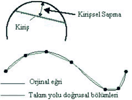
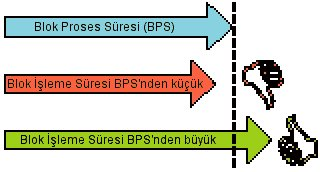

|
Çeviri:
Engin Gülþen
MET CAD/CAM/CAE, Þubat 2005
Kaynak:
Becoming
More Accurate With Speed
Bill
Elliott, Northwood
Designs, Inc. (metacut.com)
Her
þeyin anahtarý hassasiyettir. Kalýp üretimi sürecinde yapýlan
her iþ ile tezgah veya yüksek hýz kontrolü üreticisi tarafýndan
tamamlanan her görev hassasiyet hedeflidir. Ýþleme sürecinde
daha hassas üretim yapabilmek, kalýp üretimi endüstrisinin
deðiþmeyen bir hedefidir.
Ýlk
baþlarda CNC tezgahlar çizgilerle ve yaylarla ifade edilen
2D þekilleri iþlemekteydi. Þekillerin çizgi ve yaylardan oluþmasýndan
ötürü çýkacak parçanýn hassasiyeti, tezgahýn hassasiyeti ve
verilen talimatlarý takip edebilme yeteneðiyle kontrol ediliyordu
(verilerle deðil).
Daha
sonra CAD/CAM sistemleri piyasaya çýktý ve bunlar da ilk olarak
elle programlamanýn hýzlandýrýlmasý ve insan kaynaklý hatalarýn
azaltýlmasý amacýyla kullanýldý. Halâ 2D þekiller iþleniyordu.
Kýsa sürede, CAD sistemleri eðriler ve yüzeylerle ilgilenmeye
baþladýlar. Bu yeni bir oyundu, özellikle de CAM tarafý için.
Artýk matematiksel olarak doðru bir þekilde çizgi ve yaylarýn
ofsetlenmesi kadar basit deðildi.
|

|
|
Þekil
1: Kiriþsel Sapma
|
Bu
anlamda eðri ve yaylarýn iþlenmesi için gerekli olan takým
yolu o kadar da kolay tanýmlanamýyordu. Bu yüzden bir sonraki
en iyi þeyi yaptýlar; Takým yolunu belirli bir toleransla
genellikle "hassas" veya daha kusursuz hale getirdiler.
Bu da eðrilerin bir dizi doðrusal bölümlerle ifade edilmesine
ve böylece teorik mükemmel eðri yakýnsamasýnýn gerçekleþmesine
olanak saðladý. Bu doðrusal bölümler genellikle kiriþsel sapma
üzerine yapýlýrlar (bkz. Þekil 1).
Kiriþsel
Sapma: Kiriþsel sapma kiriþ ve yay (veya eðri) arasýndaki
en büyük mesafedir. Doðrusal bölümlerin toleransýný kontrol
etmek amacýyla kiriþsel sapma kullanmanýn faydalarýndan biri
tutarlý bir sapmanýzýn olmasýdýr. Eðer bir eðriyi eþit uzunlukta
çizgilere bölerseniz çizgilerin eðriden sapmasý deðiþir çünkü
eðrilik daha büyük ve küçük hale gelir. Ayný zamanda kiriþsel
sapma kullanýldýðýnda diðer yöntemlere göre daha küçük bir
data seti elde edilir.
Problemler
|

|
|
Þekil
2: Blok Ýþleme Süresi problemleri.
|
Bu
noktada, neredeyse doðru bir data setimiz vardý fakat bir
takým problemler ortaya çýktý.
Ýlk
problem binlerce küçük çizgilerin bir kontrol -ki uzun çizgi
ve yaylarýn kesimi için tasarlanmýþtý- tarafýndan doðru bir
þekilde kesilememesiydi. Literatürde olduðu gibi çok yavaþ
olan Blok Proses Süreleri (BPS) nedeniyle data içerisinde
týkanýp kalacaktý. Bu problem takýmýn sallanmasý veya teklemesi
þeklinde kendini ortaya çýkardý ve çok hýzlý kontrol olmadan
tezgahta bir kalýbý kesmeye çalýþan herhangi biri bunun nasýl
birþey olduðunu bilir (bkz. Þekil 2).
Blok
Proses Süresi (BPS): Bir kontrolün kod bloðunu okumasý,
anlamasý, uygun talimatlarý servolara göndermesi, resetlemesi
ve bir sonraki kod bloðunu okumaya baþlamasýna kadar geçen
süre. (Örnek: G1 X5.9876 Y3.9874 Z2.5467 F150.)
Blok
Ýþleme Süresi (BÝS): Bir tezgahýn fiziksel
olarak programlanan kod bloðunun sonuna kadar gitmesi için
geçen süre.
Bu
problemlerin sebebini anlamanýn en kolay yolu blok proses
süresi (BPS) ve blok iþleme süresi (BÝS) arasýndaki iliþki
olarak görmektir. Eðer BÝS, BPS'nden daha uzunsa herþey gayet
normal çalýþacaktýr. Eðer BÝS, BPS'nden kýsaysa; tezgah verilen
talimatlarý tamamladýðýnda sorunlar ortaya çýkacaktýr, çünkü
kontrolün servolara yeni talimat olarak ne vereceðini kararlaþtýrmasý
için zamaný olmayacaktýr. Bir sonraki talimat için beklerken
tezgahýn duraklamasý gerekecektir (bu "Servo Starvation"
olarak da bilinir). Süreç defalarca tekrarlandýðýnda, kendini
sallanma veya tekleme þeklinde gösterir.
Bu sorunla ilgili olarak ne yapýlabilir?
1.
Ýlerleme hýzýný (feed-rate) düþürün.
Ýlerleme hýzý düþürüldüðünde tezgahýn kod bloðunun sonuna
ulaþmasý daha uzun bir süre alýr. Bu da kontrole her bloðu
bitirmesi için daha fazla zaman tanýr. Sonuç olarak, BÝS,
BPS'nden daha uzun olur ve tezgah normal çalýþýr. Tabiiki
bu ayný zamanda iþlerinizin yavaþlamasý anlamýna gelir.
2.
Her talimatýn fiziksel uzunluðunu artýrýn.
Ýlerleme oranýnýn yavaþlatýlmasýyla ayný etkiye sahiptir;
mevcut kod bloðunun sonuna ulaþmayý geciktirir. Buradaki problem,
eðik yüzeylerin tanýmlanmasý için daha uzun çizgiler kullanmanýz
sonucunda hassasiyet seviyenizin düþmesi ve buna baðlý olarak
da elle parlatma ihtiyacýnýn artmasýdýr.
3.
BPS'ni azaltýn.
BPS'nin azaltýlmasý, sadece kontrolün daha yeni ve daha hýzlýsýyla
deðiþtirilmesiyle gerçekleþtirilebilir.
CNC
programcýlarý blok iþleme zamaný problemini azaltmak amacýyla
her ikisi de güzel sonuçlar doðurmayan metotlarý kullandýlar.
Ýlerleme hýzýnýn azaltýlmasý iþleme zamanýný artýrýrken takým
yolu hassasiyet seviyesinin düþürülmesi tesfiye çalýþmasýnýn
ciddi oranlarda artmasýna neden oluyordu.
Sonunda
imdada yüksek hýzlý kontroller yetiþti! Yüksek hýzlý kontroller
blok iþleme zamanýný minimuma indirecek þekilde tasarlanmýþlardý.
Blok proses süresinin azalmasýyla CNC programcýlarý daha yüksek
ilerleme oranlarýnda çalýþmak ve eðik yüzeylerin tanýmlanmasý
için daha küçük çizgiler kullanmakta özgür kaldýlar. Kontrolün
blok proses süresinin daha kýsa olmasý, daha hýzlý ve daha
hassas parça iþlemeyi mümkün kýldý.
Over-travel
takým yolunda arzu edilen datadan uzak bir iþlemeyi içerir.
Baþka bir deyiþle yanlýþ iþleme.
Bu, parçanýn eðriliðine göre çok hýzlý hareket sonucu ortaya
çýkar. Bu gerçekten temel bir fizik problemidir ve þu etkenler
önemlidir:
1)
Yön deðiþimi oraný (eðrilik açýsý)
2) Yön deðiþtirmek için mümkün olan kuvvet miktarý
3) Hareket ettirdiðiniz kütle
Daha
basit ifade etmek gerekirse yön deðiþimi oranýný eðrilik olarak
düþünebilirsiniz. Eðer daireler anlamýnda düþünüyorsanýz 1
metre çapýnda bir daire, 2 metre çapýndaki bir daireden daha
küçük bir eðriliðe sahiptir ve 1 metrelik daire üzerinde yön
deðiþimi daha çabuktur. Baþka
bir deyiþle düz bir çizgide yön deðiþimi yoktur.
Ýkinci
faktör, kuvvet, tezgahýnýzýn eksenlerindeki servo motorlardýr.
Her eksene uygulayabilecekleri sýnýrlý kuvvetleri vardýr.
Daha hassas olmasý için her eksen lineerdir ve tek bir eksen
veya servo motor derken kastettiðimiz "hýzlanmak veya
yavaþlamak için ne kadar kuvvetin olduðudur". Servo motor
büyüdükçe verilen bir kütleyi daha hýzlý yavaþlatabilir veya
hýzlandýrabilirsiniz.
Üçüncü
etken kütledir. Bu, iþlenen parça ile yataklý tip freze ve
tablalarý içerir. Burada ilginç olan yataklý tipli frezelerde
genelde bir eksen iki yataðý hareket ettirir. Bu da eksenlerden
birinin hareket ettirmek için çok daha fazla aðýrlýk taþýdýðý
anlamýna gelir. Bu da genelde tezgahýn maksimum yavaþlama
ve hýzlanmasýný kontrol eden eksendir.
Eðer
bir formül için ýsrar ediyorsanýz kuvvetin (f) servolar olduðu
standart f=m*a derim; Kütle (m) tablalar ve iþlenen parça,
ivme (a) de eðriliðe baðlýdýr. Çünkü eðrilik küçük olduðunda
programlanan takým yolunu terketmeden kesme yapabilmek için
yavaþlama sýrasýnda daha büyük ivme gerekir. Burada hatýrlanmasý
gereken en önemli þey verilen bir tezgah üzerinde üç faktörden
sadece birinin deðiþtiðidir; o da eðriliktir. Tezgah her zaman
ayný servolara sahiptir ve kabaca her zaman ayný kütleyi hareket
ettirir diyebiliriz. Bu da herhangi bir tezgah üzerinde verilen
bir eðrilik, belirli bir ilerleme hýzýna sahip olmasý anlamýna
gelir. Bunu "hassas ilerleme hýzý" olarak adlandýracaðýz.
Hassas ilerleme hýzý büyük eðriliklerde daha hýzlý, küçük
eðriliklerde daha yavaþtýr. Bir doðru üzerinde tezgah hýzlýca
ilerleyebilirken ani yön (keskin köþeler) deðiþimlerinde kontrolün
tam hassasiyet için durmasý gerekir.
|